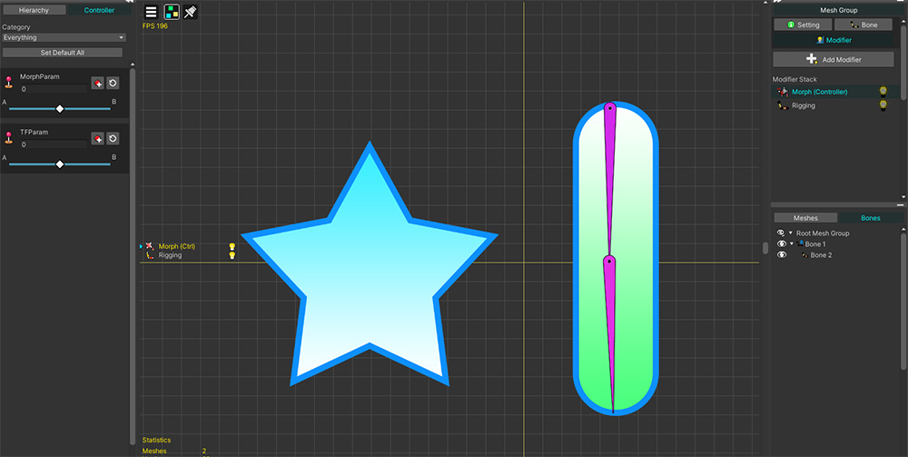
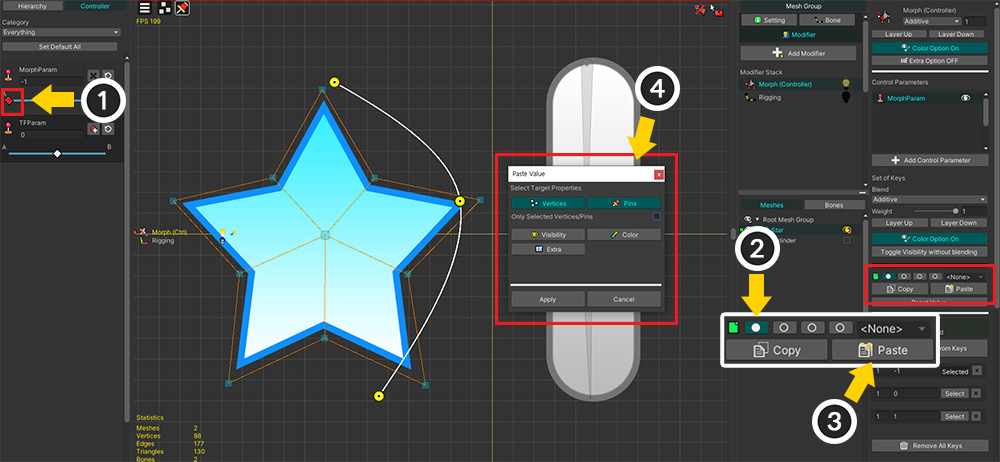

AnyPortrait > 메뉴얼 > 속성을 지정하여 붙여넣기/초기화
속성을 지정하여 붙여넣기/초기화
1.4.0
컨트롤 파라미터와 연결되는 모디파이어를 편집할 때, 값을 복사하거나 초기화하는 과정에서 항상 모든 데이터가 대상이 되었습니다.
AnyPortrait v1.4.0에 추가된 기능을 이용하면, 복사나 초기화의 대상이 되는 속성을 사용자가 선택할 수 있습니다.

설명을 위해 준비한 예제입니다.
컨트롤 파라미터와 연결되는 Morph 모디파이어 및 Transform 모디파이어로 움직일 객체들입니다.
이 예제에서는 버텍스와 핀에 Morph를 적용하거나 본에 Transform을 적용해보고 값을 복사하거나 초기화를 해보는 과정을 설명합니다.

(1) "Morph (Controller)" 모디파이어를 추가했습니다.

Morph 모디파이어로 버텍스는 물론이고 핀들을 같이 편집해봅시다.

(1) 컨트롤 파라미터를 모디파이어에 등록하고, 키를 추가합니다.
(2) 버텍스와 핀의 위치를 변형하고, 색상을 노란색으로 변경했습니다.
이제 이 상태에서 변형된 형태나 색상에 대한 값을 초기화하거나 다른 키로 복사해봅시다.
(1) Reset Value 버튼을 누릅니다.
(2) 초기화될 값의 종류를 선택하는 다이얼로그가 나타납니다.

이 다이얼로그의 구성입니다.
1. 버텍스나 핀의 위치
2. 선택된 버텍스나 핀만 대상으로 할지 여부
3. 메시의 보이기 여부, 색상, Extra 옵션
4. 선택 완료시 초기화 또는 붙여넣기 실행
만약 모두 선택하고 Apply 버튼을 누르면 위와 같이 모든 변형된 값이 초기화됩니다.

(1) 이번엔 Pins만 선택하고 (2) Apply 버튼을 눌러봅시다.

다른 속성은 그대로 유지된 상태로 핀의 위치만 초기화된 것을 볼 수 있습니다.
만약 Color만 선택했다면 형태는 유지된 상태로 색상만 원래의 값으로 돌아갑니다.
일부의 버텍스들만 초기화를 해봅시다.
(1) 초기화하고자 하는 버텍스를 선택합니다.
(2) Reset Value 버튼을 누른 후, Vertices만 켭니다.
(3) Only Selected Vertices/Pins 옵션을 켜고 Apply를 누릅니다.

선택된 버텍스들의 위치만 초기화된 것을 볼 수 있습니다.

이 기능은 값을 다른 키에 복사할 때도 사용될 수 있습니다.
(1) 값을 복사하고자 하는 키로 컨트롤 파라미터를 옮깁니다.
(2) Copy 버튼을 눌러서 값을 슬롯에 저장합니다.

(1) 값이 붙여넣어질 키로 컨트롤 파라미터를 옮깁니다.
(2) 슬롯을 선택합니다.
(3) Paste 버튼을 누릅니다.
(4) 어떤 값을 붙여넣을지 선택하는 다이얼로그가 나타납니다. Vertices와 Pins만 선택한 상태로 Apply 버튼을 눌러봅시다.

버텍스와 핀의 위치가 동일하게 복사된 것을 볼 수 있습니다.

또한 이 기능은 Transform 모디파이어에도 동일하게 적용됩니다.
(1) "Transform (Controller)" 모디파이어를 추가했습니다.
(2) Reset Value 버튼을 눌러서 값을 초기화하거나, Paste 버튼을 누릅니다.
(3) Vertices, Pins 대신 Transform 옵션이 있는 다이얼로그를 이용하여 값을 설정할 수 있습니다.